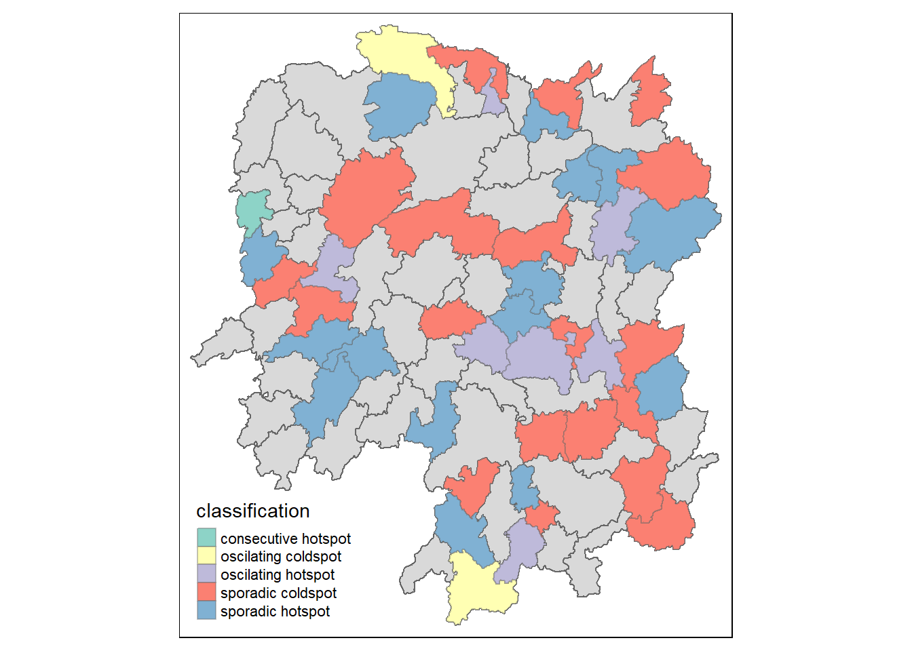

pacman::p_load(sf, tmap, sfdep, tidyverse, knitr, plotly, Kendall)In-class Exercise 2: SW, GLSA, EHSA
Notes from Class
Spatial Randomness
- High chance they are not randomly distributed
- Where are the areas with higher concentration of activity (crime, electricity consumption)
- What contributes to the difference –> spatial inequality
Spatial Context
- Spatial weights: help to define/understand spatial context
- neighbour = 1; not neighbour = 0
- Types:
- adjacent: use geog area (next to each other)
- lagged: used to see when the neighbour effect subsides
- lagged 2 = 2nd degree
- lagged: used to see when the neighbour effect subsides
- distance: within a threshold distance
- inverse distance: nearest distance = higher weightage
- For example
- real-world phenomena of neighbours who do not share same boundary eg islands
- for take home exercise, distance should be better. With hexagon, we can make sure each area is equal and more precise to capture rather than using subzones.
- adjacent: use geog area (next to each other)
- Should exclude areas (eg central catchments) before running tests (eg Moran’s I)
- Use row-standardised weight
- Summary statistics
- Global = more mathematically informed
- Spatial dependency: used to interpolate (eg goldmine discovery)
- Spatial autocorrelation:
- Compare observed value vs its neighbour
- Trying to reject H0 of spatial randomness
- Signs of clustering vs dispersion
- Negative = checkerbox pattenrs
- Positive = clumps / cluster
- Should do Monte Carlo permutations for THE1!
- Spatial dependency: used to interpolate (eg goldmine discovery)
- Local
- Local Moran’s I
- Highlight both autocorrelation and where statistic test is significant
- Could also have autocorrelation bc not enough neighbours
- Could be applied to distance and proximity
- Gi’s statistics
- Only distance-based
- Gi = doesnt count itself
- G*i = takes itself into consideration (Moran’s I and Geary’s C uses this)
- Local Moran’s I
- Global = more mathematically informed
- Emerging hotpot
- Usually used for time-series data
- Mann-Kendall test: statistical, non-spatial
- if value at time k > time j (reference value)
- EHSA: replaces x with G*i
- cube = 1. time, 2. passengers, 3. location
1 Overview
- Using sfdep
2 Getting Started
- sf: does buffer, count polygons
- sfdep: create spacetime cube, and EHSA
- tmap: create thematic maps
- tidyverse: to conform to tiddle dataframe format; incl. readr to import text file into r, readxl, dplyr, ggplot2 etc
- knitr: create html tables
- plotly: intera ctive plots
The Data
- Geospatial: Hunan in ESRI shapefile format.
- Aspatial: Hunan_2012.csv.
Import Data
hunan <- st_read(dsn = "data/geospatial",
layer = "Hunan")Reading layer `Hunan' from data source
`C:\kytjy\ISSS624\In-class_Ex\In-class_Ex2\data\geospatial'
using driver `ESRI Shapefile'
Simple feature collection with 88 features and 7 fields
Geometry type: POLYGON
Dimension: XY
Bounding box: xmin: 108.7831 ymin: 24.6342 xmax: 114.2544 ymax: 30.12812
Geodetic CRS: WGS 84class(hunan)[1] "sf" "data.frame"- tibble df, each observation represents 1 geographical area as it has geometry that allows you to plot polygon feature
- each record is a simple feature (sf) if it has geometry data
hunan2012 <- read_csv("data/aspatial/Hunan_2012.csv")- non-spatial data
- typical tibble data frame
- In order to retain the geospatial properties, the left dataframe must be the sf data.frame (ie hunan)
- If reversed, geometry will be dropped
- This left_join is from dplyr, rather than from Base R
hunan_GDPPC <- left_join(hunan,
hunan2012)%>%
select(1:4, 7, 15)
# by = c('County' = 'County')) not specified bc matched automatically
glimpse(hunan_GDPPC)Rows: 88
Columns: 7
$ NAME_2 <chr> "Changde", "Changde", "Changde", "Changde", "Changde", "Chan…
$ ID_3 <int> 21098, 21100, 21101, 21102, 21103, 21104, 21109, 21110, 2111…
$ NAME_3 <chr> "Anxiang", "Hanshou", "Jinshi", "Li", "Linli", "Shimen", "Li…
$ ENGTYPE_3 <chr> "County", "County", "County City", "County", "County", "Coun…
$ County <chr> "Anxiang", "Hanshou", "Jinshi", "Li", "Linli", "Shimen", "Li…
$ GDPPC <dbl> 23667, 20981, 34592, 24473, 25554, 27137, 63118, 62202, 7066…
$ geometry <POLYGON [°]> POLYGON ((112.0625 29.75523..., POLYGON ((112.2288 2…tmap_mode("plot")
tm_shape(hunan_GDPPC) +
tm_fill("GDPPC",
style = "quantile",
palette = "Blues",
title = "GDPPC") +
tm_borders(alpha = 0.5) +
tm_layout(main.title = "Distribution of GDP per capita by district, Hunan Province",
main.title.position = "center",
main.title.size = 0.8,
legend.height = 0.45,
legend.width = 0.35,
legend.text.size = 0.6,
frame = TRUE) +
tm_compass(type="8star", size = 2) +
tm_scale_bar() +
tm_grid(alpha =0.2)3 Deriving Contiguity Spatial Weight
- Identify contiguity neighbours list
- Derive contiguity spatial weights
3.1 Identify contiguity neighbours: Queen’s Method
nb_queen <- hunan_GDPPC %>%
mutate(nb = st_contiguity(geometry),
.before = 1)
# queen = TRUE by defaultsummary(nb_queen$nb)Neighbour list object:
Number of regions: 88
Number of nonzero links: 448
Percentage nonzero weights: 5.785124
Average number of links: 5.090909
Link number distribution:
1 2 3 4 5 6 7 8 9 11
2 2 12 16 24 14 11 4 2 1
2 least connected regions:
30 65 with 1 link
1 most connected region:
85 with 11 links# 88 area units in Hunan
# Most connected area unit has 11 neighbours
# 2 are units with only 1 neighbournb_queenSimple feature collection with 88 features and 7 fields
Geometry type: POLYGON
Dimension: XY
Bounding box: xmin: 108.7831 ymin: 24.6342 xmax: 114.2544 ymax: 30.12812
Geodetic CRS: WGS 84
First 10 features:
nb NAME_2 ID_3 NAME_3 ENGTYPE_3
1 2, 3, 4, 57, 85 Changde 21098 Anxiang County
2 1, 57, 58, 78, 85 Changde 21100 Hanshou County
3 1, 4, 5, 85 Changde 21101 Jinshi County City
4 1, 3, 5, 6 Changde 21102 Li County
5 3, 4, 6, 85 Changde 21103 Linli County
6 4, 5, 69, 75, 85 Changde 21104 Shimen County
7 67, 71, 74, 84 Changsha 21109 Liuyang County City
8 9, 46, 47, 56, 78, 80, 86 Changsha 21110 Ningxiang County
9 8, 66, 68, 78, 84, 86 Changsha 21111 Wangcheng County
10 16, 17, 19, 20, 22, 70, 72, 73 Chenzhou 21112 Anren County
County GDPPC geometry
1 Anxiang 23667 POLYGON ((112.0625 29.75523...
2 Hanshou 20981 POLYGON ((112.2288 29.11684...
3 Jinshi 34592 POLYGON ((111.8927 29.6013,...
4 Li 24473 POLYGON ((111.3731 29.94649...
5 Linli 25554 POLYGON ((111.6324 29.76288...
6 Shimen 27137 POLYGON ((110.8825 30.11675...
7 Liuyang 63118 POLYGON ((113.9905 28.5682,...
8 Ningxiang 62202 POLYGON ((112.7181 28.38299...
9 Wangcheng 70666 POLYGON ((112.7914 28.52688...
10 Anren 12761 POLYGON ((113.1757 26.82734...# Shows that polygon 1 has five neighbours (polygons #2, 3, 4, 57,and 85)kable(head(nb_queen,
n=3))| nb | NAME_2 | ID_3 | NAME_3 | ENGTYPE_3 | County | GDPPC | geometry |
|---|---|---|---|---|---|---|---|
| 2, 3, 4, 57, 85 | Changde | 21098 | Anxiang | County | Anxiang | 23667 | POLYGON ((112.0625 29.75523… |
| 1, 57, 58, 78, 85 | Changde | 21100 | Hanshou | County | Hanshou | 20981 | POLYGON ((112.2288 29.11684… |
| 1, 4, 5, 85 | Changde | 21101 | Jinshi | County City | Jinshi | 34592 | POLYGON ((111.8927 29.6013,… |
3.2 Identify Contiguity Neighbours: Rooks’ Method
nb_rook <- hunan_GDPPC %>%
mutate(nb = st_contiguity(geometry,
queen = FALSE),
.before = 1)- Derive contiguity neighbour list using lag 2 Queen’s method
nb2_queen <- hunan_GDPPC %>%
mutate(nb = st_contiguity(geometry),
nb2 = st_nb_lag_cumul(nb, 2),
.before = 1)
## nb column shows neighbours list for each county, note that Queen's method has more neighbours in some cases!nb2_queenSimple feature collection with 88 features and 8 fields
Geometry type: POLYGON
Dimension: XY
Bounding box: xmin: 108.7831 ymin: 24.6342 xmax: 114.2544 ymax: 30.12812
Geodetic CRS: WGS 84
First 10 features:
nb
1 2, 3, 4, 57, 85
2 1, 57, 58, 78, 85
3 1, 4, 5, 85
4 1, 3, 5, 6
5 3, 4, 6, 85
6 4, 5, 69, 75, 85
7 67, 71, 74, 84
8 9, 46, 47, 56, 78, 80, 86
9 8, 66, 68, 78, 84, 86
10 16, 17, 19, 20, 22, 70, 72, 73
nb2
1 2, 3, 4, 5, 6, 32, 56, 57, 58, 64, 69, 75, 76, 78, 85
2 1, 3, 4, 5, 6, 8, 9, 32, 56, 57, 58, 64, 68, 69, 75, 76, 78, 85
3 1, 2, 4, 5, 6, 32, 56, 57, 69, 75, 78, 85
4 1, 2, 3, 5, 6, 57, 69, 75, 85
5 1, 2, 3, 4, 6, 32, 56, 57, 69, 75, 78, 85
6 1, 2, 3, 4, 5, 32, 53, 55, 56, 57, 69, 75, 78, 85
7 9, 19, 66, 67, 71, 73, 74, 76, 84, 86
8 2, 9, 19, 21, 31, 32, 34, 35, 36, 41, 45, 46, 47, 56, 58, 66, 68, 74, 78, 80, 84, 85, 86
9 2, 7, 8, 19, 21, 35, 46, 47, 56, 58, 66, 67, 68, 74, 76, 78, 80, 84, 85, 86
10 11, 14, 15, 16, 17, 18, 19, 20, 21, 22, 23, 70, 71, 72, 73, 74, 82, 83, 86
NAME_2 ID_3 NAME_3 ENGTYPE_3 County GDPPC
1 Changde 21098 Anxiang County Anxiang 23667
2 Changde 21100 Hanshou County Hanshou 20981
3 Changde 21101 Jinshi County City Jinshi 34592
4 Changde 21102 Li County Li 24473
5 Changde 21103 Linli County Linli 25554
6 Changde 21104 Shimen County Shimen 27137
7 Changsha 21109 Liuyang County City Liuyang 63118
8 Changsha 21110 Ningxiang County Ningxiang 62202
9 Changsha 21111 Wangcheng County Wangcheng 70666
10 Chenzhou 21112 Anren County Anren 12761
geometry
1 POLYGON ((112.0625 29.75523...
2 POLYGON ((112.2288 29.11684...
3 POLYGON ((111.8927 29.6013,...
4 POLYGON ((111.3731 29.94649...
5 POLYGON ((111.6324 29.76288...
6 POLYGON ((110.8825 30.11675...
7 POLYGON ((113.9905 28.5682,...
8 POLYGON ((112.7181 28.38299...
9 POLYGON ((112.7914 28.52688...
10 POLYGON ((113.1757 26.82734...4 Deriving contiguity weights: Queen’s method
wm_q <- hunan_GDPPC %>%
mutate(nb=st_contiguity(geometry),
wt=st_weights(nb,
style="W"),
.before=1)- style = W: row standardised weight matrix, can also be B/U/S/minmax
- nb = nearest neigbour
- dont have to separate contiguity & weights separately with sfdep
- .before = 1: adds before the first column
- allow_zero: If TRUE, assigns zero as lagged value to zone without neighbors.
wm_qSimple feature collection with 88 features and 8 fields
Geometry type: POLYGON
Dimension: XY
Bounding box: xmin: 108.7831 ymin: 24.6342 xmax: 114.2544 ymax: 30.12812
Geodetic CRS: WGS 84
First 10 features:
nb
1 2, 3, 4, 57, 85
2 1, 57, 58, 78, 85
3 1, 4, 5, 85
4 1, 3, 5, 6
5 3, 4, 6, 85
6 4, 5, 69, 75, 85
7 67, 71, 74, 84
8 9, 46, 47, 56, 78, 80, 86
9 8, 66, 68, 78, 84, 86
10 16, 17, 19, 20, 22, 70, 72, 73
wt
1 0.2, 0.2, 0.2, 0.2, 0.2
2 0.2, 0.2, 0.2, 0.2, 0.2
3 0.25, 0.25, 0.25, 0.25
4 0.25, 0.25, 0.25, 0.25
5 0.25, 0.25, 0.25, 0.25
6 0.2, 0.2, 0.2, 0.2, 0.2
7 0.25, 0.25, 0.25, 0.25
8 0.1428571, 0.1428571, 0.1428571, 0.1428571, 0.1428571, 0.1428571, 0.1428571
9 0.1666667, 0.1666667, 0.1666667, 0.1666667, 0.1666667, 0.1666667
10 0.125, 0.125, 0.125, 0.125, 0.125, 0.125, 0.125, 0.125
NAME_2 ID_3 NAME_3 ENGTYPE_3 County GDPPC
1 Changde 21098 Anxiang County Anxiang 23667
2 Changde 21100 Hanshou County Hanshou 20981
3 Changde 21101 Jinshi County City Jinshi 34592
4 Changde 21102 Li County Li 24473
5 Changde 21103 Linli County Linli 25554
6 Changde 21104 Shimen County Shimen 27137
7 Changsha 21109 Liuyang County City Liuyang 63118
8 Changsha 21110 Ningxiang County Ningxiang 62202
9 Changsha 21111 Wangcheng County Wangcheng 70666
10 Chenzhou 21112 Anren County Anren 12761
geometry
1 POLYGON ((112.0625 29.75523...
2 POLYGON ((112.2288 29.11684...
3 POLYGON ((111.8927 29.6013,...
4 POLYGON ((111.3731 29.94649...
5 POLYGON ((111.6324 29.76288...
6 POLYGON ((110.8825 30.11675...
7 POLYGON ((113.9905 28.5682,...
8 POLYGON ((112.7181 28.38299...
9 POLYGON ((112.7914 28.52688...
10 POLYGON ((113.1757 26.82734...4 Distance-Based Weights
There are three popularly used distance-based spatial weights, they are: - fixed distance weights, - adaptive distance weights, and - inverse distance weights (IDW).
Step 1: Determine upper limit for distance bands
geo <- sf::st_geometry(hunan_GDPPC)
nb <- st_knn(geo, k=1, longlat = TRUE)
dists <- unlist(st_nb_dists(geo, nb))Step 2: Derive summary stats
summary(dists) Min. 1st Qu. Median Mean 3rd Qu. Max.
21.56 29.11 36.89 37.34 43.21 65.80 The maximum nearest neighbour distance is 65.8 km, thus we will use threshold value of 66km to ensure each spatial unit as least one neighbour.
Step 3: Compute fixed distance weight
wm_fd <- hunan_GDPPC %>%
mutate(nb = st_dist_band(geometry,
upper = 66),
wt = st_weights(nb),
.before = 1)Step 4: Examine data frame
wm_fdSimple feature collection with 88 features and 8 fields
Geometry type: POLYGON
Dimension: XY
Bounding box: xmin: 108.7831 ymin: 24.6342 xmax: 114.2544 ymax: 30.12812
Geodetic CRS: WGS 84
First 10 features:
nb
1 2, 3, 4, 5, 57, 64
2 1, 57, 58, 78, 85
3 1, 4, 5, 57
4 1, 3, 5, 6
5 1, 3, 4, 6, 69
6 4, 5, 69
7 67, 71, 84
8 9, 46, 47, 78, 80
9 8, 46, 66, 68, 84, 86
10 16, 20, 22, 70, 72, 73
wt NAME_2
1 0.1666667, 0.1666667, 0.1666667, 0.1666667, 0.1666667, 0.1666667 Changde
2 0.2, 0.2, 0.2, 0.2, 0.2 Changde
3 0.25, 0.25, 0.25, 0.25 Changde
4 0.25, 0.25, 0.25, 0.25 Changde
5 0.2, 0.2, 0.2, 0.2, 0.2 Changde
6 0.3333333, 0.3333333, 0.3333333 Changde
7 0.3333333, 0.3333333, 0.3333333 Changsha
8 0.2, 0.2, 0.2, 0.2, 0.2 Changsha
9 0.1666667, 0.1666667, 0.1666667, 0.1666667, 0.1666667, 0.1666667 Changsha
10 0.1666667, 0.1666667, 0.1666667, 0.1666667, 0.1666667, 0.1666667 Chenzhou
ID_3 NAME_3 ENGTYPE_3 County GDPPC geometry
1 21098 Anxiang County Anxiang 23667 POLYGON ((112.0625 29.75523...
2 21100 Hanshou County Hanshou 20981 POLYGON ((112.2288 29.11684...
3 21101 Jinshi County City Jinshi 34592 POLYGON ((111.8927 29.6013,...
4 21102 Li County Li 24473 POLYGON ((111.3731 29.94649...
5 21103 Linli County Linli 25554 POLYGON ((111.6324 29.76288...
6 21104 Shimen County Shimen 27137 POLYGON ((110.8825 30.11675...
7 21109 Liuyang County City Liuyang 63118 POLYGON ((113.9905 28.5682,...
8 21110 Ningxiang County Ningxiang 62202 POLYGON ((112.7181 28.38299...
9 21111 Wangcheng County Wangcheng 70666 POLYGON ((112.7914 28.52688...
10 21112 Anren County Anren 12761 POLYGON ((113.1757 26.82734...kable(head(wm_fd,
n=5))| nb | wt | NAME_2 | ID_3 | NAME_3 | ENGTYPE_3 | County | GDPPC | geometry |
|---|---|---|---|---|---|---|---|---|
| 2, 3, 4, 5, 57, 64 | 0.1666667, 0.1666667, 0.1666667, 0.1666667, 0.1666667, 0.1666667 | Changde | 21098 | Anxiang | County | Anxiang | 23667 | POLYGON ((112.0625 29.75523… |
| 1, 57, 58, 78, 85 | 0.2, 0.2, 0.2, 0.2, 0.2 | Changde | 21100 | Hanshou | County | Hanshou | 20981 | POLYGON ((112.2288 29.11684… |
| 1, 4, 5, 57 | 0.25, 0.25, 0.25, 0.25 | Changde | 21101 | Jinshi | County City | Jinshi | 34592 | POLYGON ((111.8927 29.6013,… |
| 1, 3, 5, 6 | 0.25, 0.25, 0.25, 0.25 | Changde | 21102 | Li | County | Li | 24473 | POLYGON ((111.3731 29.94649… |
| 1, 3, 4, 6, 69 | 0.2, 0.2, 0.2, 0.2, 0.2 | Changde | 21103 | Linli | County | Linli | 25554 | POLYGON ((111.6324 29.76288… |
wm_ad <- hunan_GDPPC %>%
mutate(nb = st_knn(geometry,
k=8),
wt = st_weights(nb),
.before = 1)wm_idw <- hunan_GDPPC %>%
mutate(nb = st_contiguity(geometry),
wts = st_inverse_distance(nb, geometry,
scale = 1,
alpha = 1),
.before = 1)5 GLSA using sfdep
5.1 Global Measure of Spatial Association
# Output: tibble format
moranI <- global_moran(wm_q$GDPPC,
wm_q$nb,
wm_q$wt)
glimpse(moranI)List of 2
$ I: num 0.301
$ K: num 7.64global_moran_test(wm_q$GDPPC,
wm_q$nb,
wm_q$wt)
Moran I test under randomisation
data: x
weights: listw
Moran I statistic standard deviate = 4.7351, p-value = 1.095e-06
alternative hypothesis: greater
sample estimates:
Moran I statistic Expectation Variance
0.300749970 -0.011494253 0.004348351 # default: “two.sided”; can also be “greater” or “less”.
# default: randomization = TRUE. If FALSE, under the assumption of normality.Global Moran’s I Permutation Test
set.seed(1234)
global_moran_perm(wm_q$GDPPC,
wm_q$nb,
wm_q$wt,
nsim = 99)
Monte-Carlo simulation of Moran I
data: x
weights: listw
number of simulations + 1: 100
statistic = 0.30075, observed rank = 100, p-value < 2.2e-16
alternative hypothesis: two.sided# no. of simulations = nsim + 1, ie nsim = 99, 100 simulations will be performed.5.2 Compute Local Moran’s I
lisa <- wm_q %>%
mutate(local_moran = local_moran(
GDPPC, nb, wt, nsim=99),
.before=1) %>%
# unlist the data
unnest(local_moran)
lisaSimple feature collection with 88 features and 20 fields
Geometry type: POLYGON
Dimension: XY
Bounding box: xmin: 108.7831 ymin: 24.6342 xmax: 114.2544 ymax: 30.12812
Geodetic CRS: WGS 84
# A tibble: 88 × 21
ii eii var_ii z_ii p_ii p_ii_sim p_folded_sim skewness
<dbl> <dbl> <dbl> <dbl> <dbl> <dbl> <dbl> <dbl>
1 -0.00147 0.00177 0.000418 -0.158 0.874 0.82 0.41 -0.812
2 0.0259 0.00641 0.0105 0.190 0.849 0.96 0.48 -1.09
3 -0.0120 -0.0374 0.102 0.0796 0.937 0.76 0.38 0.824
4 0.00102 -0.0000349 0.00000437 0.506 0.613 0.64 0.32 1.04
5 0.0148 -0.00340 0.00165 0.449 0.654 0.5 0.25 1.64
6 -0.0388 -0.00339 0.00545 -0.480 0.631 0.82 0.41 0.614
7 3.37 -0.198 1.41 3.00 0.00266 0.08 0.04 1.46
8 1.56 -0.265 0.804 2.04 0.0417 0.08 0.04 0.459
9 4.42 0.0450 1.79 3.27 0.00108 0.02 0.01 0.746
10 -0.399 -0.0505 0.0859 -1.19 0.234 0.28 0.14 -0.685
# ℹ 78 more rows
# ℹ 13 more variables: kurtosis <dbl>, mean <fct>, median <fct>, pysal <fct>,
# nb <nb>, wt <list>, NAME_2 <chr>, ID_3 <int>, NAME_3 <chr>,
# ENGTYPE_3 <chr>, County <chr>, GDPPC <dbl>, geometry <POLYGON [°]># The quadrants (HH, LH, HL, LL) is automatically calculated for us.colnames(lisa) [1] "ii" "eii" "var_ii" "z_ii" "p_ii"
[6] "p_ii_sim" "p_folded_sim" "skewness" "kurtosis" "mean"
[11] "median" "pysal" "nb" "wt" "NAME_2"
[16] "ID_3" "NAME_3" "ENGTYPE_3" "County" "GDPPC"
[21] "geometry" - Number of simulation is always = nsim + 1, nsim = 99 means 100 simulations
- ii: local moran statistic
- eii: expectation of local moran statistics
- Var_ii: variance of local moran statistic
- z_ii:
- high-high/low-low columns based on mean, median and pysal (if highly skewed, should use median. Look at distribution of variables.)
tmap_mode("plot")
tm_shape(lisa) +
tm_fill("ii") +
tm_borders(alpha = 0.5) +
tm_view(set.zoom.limits = c(6,8)) +
tm_layout(main.title = "local Moran's I of GDPPC",
main.title.size = 0.8)
tmap_mode("plot")
tm_shape(lisa) +
tm_fill("p_ii_sim") +
tm_borders(alpha = 0.5) +
tm_layout(main.title = "p-value of local Moran's I",
main.title.size = 0.8)
tmap_mode("plot")
map1 <- tm_shape(lisa) +
tm_fill("ii") +
tm_borders(alpha = 0.5) +
tm_view(set.zoom.limits = c(6,8)) +
tm_layout(main.title = "local Moran's I of GDPPC",
main.title.size = 0.8)
map2 <- tm_shape(lisa) +
tm_fill("p_ii",
breaks = c(0, 0.001, 0.01, 0.05, 1),
labels = c("0.001", "0.01", "0.05", "Not sig")) +
tm_borders(alpha = 0.5) +
tm_layout(main.title = "p-value of local Moran's I",
main.title.size = 0.8)
tmap_arrange(map1, map2, ncol = 2)
lisa_sig <- lisa %>%
filter(p_ii < 0.05)
tmap_mode("plot")
tm_shape(lisa) +
tm_polygons() +
tm_borders(alpha = 0.5) +
tm_shape(lisa_sig) +
tm_fill("mean") + ##check distribution to know if should use mean/median
tm_borders(alpha = 0.4)
5.3 Hot Spot & Cold Spot Area Analysis (HCSA)
- HCSA uses spatial weights to identify locations of statistically significant hot/cold spots in a spatially weighted attribute that are in proximity of one another based on calculated dist.
wm_idw <- hunan_GDPPC %>%
mutate(nb = st_contiguity(geometry),
wts = st_inverse_distance(nb, geometry,
scale = 1,
alpha = 1),
.before = 1)HCSA <- wm_idw %>%
mutate(local_Gi = local_gstar_perm(
GDPPC, nb, wt, nsim = 99),
.before = 1) %>%
unnest(local_Gi)
HCSASimple feature collection with 88 features and 16 fields
Geometry type: POLYGON
Dimension: XY
Bounding box: xmin: 108.7831 ymin: 24.6342 xmax: 114.2544 ymax: 30.12812
Geodetic CRS: WGS 84
# A tibble: 88 × 17
gi_star e_gi var_gi p_value p_sim p_folded_sim skewness kurtosis nb
<dbl> <dbl> <dbl> <dbl> <dbl> <dbl> <dbl> <dbl> <nb>
1 0.0416 0.0114 6.41e-6 0.0493 9.61e-1 0.7 0.35 0.875 <int>
2 -0.333 0.0106 3.84e-6 -0.0941 9.25e-1 1 0.5 0.661 <int>
3 0.281 0.0126 7.51e-6 -0.151 8.80e-1 0.9 0.45 0.640 <int>
4 0.411 0.0118 9.22e-6 0.264 7.92e-1 0.6 0.3 0.853 <int>
5 0.387 0.0115 9.56e-6 0.339 7.34e-1 0.62 0.31 1.07 <int>
6 -0.368 0.0118 5.91e-6 -0.583 5.60e-1 0.72 0.36 0.594 <int>
7 3.56 0.0151 7.31e-6 2.61 9.01e-3 0.06 0.03 1.09 <int>
8 2.52 0.0136 6.14e-6 1.49 1.35e-1 0.2 0.1 1.12 <int>
9 4.56 0.0144 5.84e-6 3.53 4.17e-4 0.04 0.02 1.23 <int>
10 1.16 0.0104 3.70e-6 1.82 6.86e-2 0.12 0.06 0.416 <int>
# ℹ 78 more rows
# ℹ 8 more variables: wts <list>, NAME_2 <chr>, ID_3 <int>, NAME_3 <chr>,
# ENGTYPE_3 <chr>, County <chr>, GDPPC <dbl>, geometry <POLYGON [°]>is_tibble(HCSA)[1] TRUEtmap_mode("plot")
tm_shape(HCSA) +
tm_fill("gi_star") +
tm_borders(alpha = 0.5) +
tm_view(set.zoom.limits = c(6,8))
tmap_mode("plot")
tm_shape(HCSA) +
tm_fill("p_sim") +
tm_borders(alpha = 0.5)
tmap_mode("plot")
map1 <- tm_shape(HCSA) +
tm_fill("gi_star") +
tm_borders(alpha = 0.5) +
tm_view(set.zoom.limits = c(6,8)) +
tm_layout(main.title = "Gi* of GDPPC",
main.title.size = 0.8)
map2 <- tm_shape(HCSA) +
tm_fill("p_value",
breaks = c(0, 0.001, 0.01, 0.05, 1),
labels = c("0.001", "0.01", "0.05", "Not sig")) +
tm_borders(alpha = 0.5) +
tm_layout(main.title = "p-value of Gi*",
main.title.size = 0.8)
tmap_arrange(map1, map2, ncol = 2)
Plot the significant (i.e. p-values <0.05) hot spot and cold spot areas:
HCSA_sig <- HCSA %>%
filter(p_sim < 0.05) #alpha = 5%
tmap_mode("plot")
tm_shape(HCSA) +
tm_polygons() +
tm_borders(alpha = 0.5) +
tm_shape(HCSA_sig) +
tm_fill("gi_star") +
tm_borders(alpha = 0.4)
6 EHSA
- build spacetime cube: location, date, GDPPC
GDPPC <- read_csv('data/aspatial/Hunan_GDPPC.csv')6.1 Time Series Cube
GDPPC_st <- spacetime(GDPPC, hunan,
.loc_col = 'County', #assign location
.time_col = 'Year') #assign time
class(GDPPC_st)[1] "spacetime" "spec_tbl_df" "tbl_df" "tbl" "data.frame" str(GDPPC_st)spacetim [1,496 × 3] (S3: spacetime/spec_tbl_df/tbl_df/tbl/data.frame)
$ Year : num [1:1496] 2005 2005 2005 2005 2005 ...
$ County: chr [1:1496] "Longshan" "Changsha" "Wangcheng" "Ningxiang" ...
$ GDPPC : num [1:1496] 3469 24612 14659 11687 13406 ...
- attr(*, "spec")=
.. cols(
.. Year = col_double(),
.. County = col_character(),
.. GDPPC = col_double()
.. )
- attr(*, "problems")=<externalptr>
- attr(*, "active")= chr "data"
- attr(*, "data")= spc_tbl_ [1,496 × 3] (S3: spec_tbl_df/tbl_df/tbl/data.frame)
..$ Year : num [1:1496] 2005 2005 2005 2005 2005 ...
..$ County: chr [1:1496] "Longshan" "Changsha" "Wangcheng" "Ningxiang" ...
..$ GDPPC : num [1:1496] 3469 24612 14659 11687 13406 ...
..- attr(*, "spec")=
.. .. cols(
.. .. Year = col_double(),
.. .. County = col_character(),
.. .. GDPPC = col_double()
.. .. )
..- attr(*, "problems")=<externalptr>
- attr(*, "geometry")=Classes 'sf' and 'data.frame': 88 obs. of 8 variables:
..$ NAME_2 : chr [1:88] "Changde" "Changde" "Changde" "Changde" ...
..$ ID_3 : int [1:88] 21098 21100 21101 21102 21103 21104 21109 21110 21111 21112 ...
..$ NAME_3 : chr [1:88] "Anxiang" "Hanshou" "Jinshi" "Li" ...
..$ ENGTYPE_3 : chr [1:88] "County" "County" "County City" "County" ...
..$ Shape_Leng: num [1:88] 1.87 2.36 1.43 3.47 2.29 ...
..$ Shape_Area: num [1:88] 0.101 0.2 0.053 0.189 0.115 ...
..$ County : chr [1:88] "Anxiang" "Hanshou" "Jinshi" "Li" ...
..$ geometry :sfc_POLYGON of length 88; first list element: List of 1
.. ..$ : num [1:427, 1:2] 112 112 112 112 112 ...
.. ..- attr(*, "class")= chr [1:3] "XY" "POLYGON" "sfg"
..- attr(*, "sf_column")= chr "geometry"
..- attr(*, "agr")= Factor w/ 3 levels "constant","aggregate",..: NA NA NA NA NA NA NA
.. ..- attr(*, "names")= chr [1:7] "NAME_2" "ID_3" "NAME_3" "ENGTYPE_3" ...
- attr(*, "loc_col")= chr "County"
- attr(*, "locs")= chr [1:88] "Anxiang" "Hanshou" "Jinshi" "Li" ...
- attr(*, "n_locs")= int 88
- attr(*, "time_col")= chr "Year"
- attr(*, "times")= num [1:17] 2005 2006 2007 2008 2009 ...
- attr(*, "n_times")= int 17is_spacetime_cube(GDPPC_st)[1] TRUE6.2 Computing Gi*
- activate(): to activate geometry context
- mutate(): to create 2 new cols nb and wt
- set_nbs() and set_wts(): activate data context again & copy over the nb & wt cols to each time-slice
GDPPC_nb <- GDPPC_st %>%
activate("geometry") %>%
mutate(nb = include_self(st_contiguity(geometry)),
wt = st_inverse_distance(nb,
geometry,
scale = 1,
alpha = 1),
.before = 1) %>%
set_nbs("nb") %>%
set_wts("wt")
head(GDPPC_nb)# A tibble: 6 × 5
Year County GDPPC nb wt
<dbl> <chr> <dbl> <list> <list>
1 2005 Anxiang 8184 <int [6]> <dbl [6]>
2 2005 Hanshou 6560 <int [6]> <dbl [6]>
3 2005 Jinshi 9956 <int [5]> <dbl [5]>
4 2005 Li 8394 <int [5]> <dbl [5]>
5 2005 Linli 8850 <int [5]> <dbl [5]>
6 2005 Shimen 9244 <int [6]> <dbl [6]>gi_stars <- GDPPC_nb %>%
group_by(Year) %>%
mutate(gi_star = local_gstar_perm(
GDPPC, nb, wt)) %>%
tidyr::unnest(gi_star)
glimpse(gi_stars)Rows: 1,496
Columns: 13
Groups: Year [17]
$ Year <dbl> 2005, 2005, 2005, 2005, 2005, 2005, 2005, 2005, 2005, 200…
$ County <chr> "Anxiang", "Hanshou", "Jinshi", "Li", "Linli", "Shimen", …
$ GDPPC <dbl> 8184, 6560, 9956, 8394, 8850, 9244, 13406, 11687, 14659, …
$ nb <list> <1, 2, 3, 4, 57, 85>, <1, 2, 57, 58, 78, 85>, <1, 3, 4, …
$ wt <list> <0.00000000, 0.01526149, 0.03515537, 0.02176677, 0.02836…
$ gi_star <dbl> 0.39812392, -0.23690950, 1.05308649, 0.96565566, 1.047539…
$ e_gi <dbl> 0.011503828, 0.010904067, 0.012643127, 0.011729795, 0.011…
$ var_gi <dbl> 2.689913e-06, 2.640805e-06, 3.327364e-06, 3.235001e-06, 3…
$ p_value <dbl> 0.382095046, 0.001990885, 0.507080740, 0.920309942, 0.884…
$ p_sim <dbl> 0.7023908659, 0.9984115046, 0.6120981684, 0.3574108152, 0…
$ p_folded_sim <dbl> 0.608, 0.892, 0.528, 0.308, 0.352, 0.920, 0.008, 0.396, 0…
$ skewness <dbl> 0.304, 0.446, 0.264, 0.154, 0.176, 0.460, 0.004, 0.198, 0…
$ kurtosis <dbl> 0.8925173, 0.8204179, 0.9285558, 1.1852446, 0.8742758, 0.…6.3 Mann-Kendall Test
With these Gi* measures by year we can then evaluate each location for a trend using the Mann-Kendall test. The code chunk below uses Changsha county.
cbg <- gi_stars %>%
ungroup() %>%
filter(County == "Changsha") |>
select(County, Year, gi_star)
glimpse(cbg)Rows: 17
Columns: 3
$ County <chr> "Changsha", "Changsha", "Changsha", "Changsha", "Changsha", "C…
$ Year <dbl> 2005, 2006, 2007, 2008, 2009, 2010, 2011, 2012, 2013, 2014, 20…
$ gi_star <dbl> 5.028300, 5.169201, 5.295889, 5.603954, 6.278886, 5.935746, 5.…p <- ggplot(data = cbg,
aes(x = Year,
y = gi_star)) +
geom_line() +
theme_light()
ggplotly(p)cbg %>%
summarise(mk = list(
unclass(
Kendall::MannKendall(gi_star)))) %>%
tidyr::unnest_wider(mk)# A tibble: 1 × 5
tau sl S D varS
<dbl> <dbl> <dbl> <dbl> <dbl>
1 0.485 0.00742 66 136. 589.sl = p-value, tau = trend This result tells us that there is a slight upward but insignificant trend. We can replicate this for each location by using group_by() of dplyr package.
ehsa <- gi_stars %>%
group_by(County) %>%
summarise(mk = list(
unclass(
Kendall::MannKendall(gi_star)))) %>%
tidyr::unnest_wider(mk)6.4 Emerging Hot Spot Analysis
:::panel-tabset ## Arrange to show sig emerging hot/cold spots
emerging <- ehsa %>%
arrange(sl, abs(tau)) %>%
slice(1:5)Performing Emerging Hotspot Analysis
emerging_hotspot_analysis() of sfdep package: - spacetime object x (i.e. GDPPC_st), - quoted name of the variable of interest (i.e. GDPPC) for .var argument. - k argument is used to specify the number of time lags which is set to 1 by default - nsim map numbers of simulation to be performed.
ehsa <- emerging_hotspot_analysis(
x = GDPPC_st,
.var = "GDPPC",
k = 1,
nsim = 99
)Visualise distribution of EHSA classes
ggplot(data = ehsa,
aes(x = classification)) +
geom_bar()
Visualising EHSA
Visualise the geographic distribution EHSA classes. However, before we can do so, we need to join both hunan and ehsa together by using the code chunk below.
- when using tmaps, not significant will be greyed out
hunan_ehsa <- hunan %>%
left_join(ehsa,
by = join_by(County == location))Next, tmap functions will be used to plot a categorical choropleth map by using the code chunk below.
ehsa_sig <- hunan_ehsa %>%
filter(p_value < 0.05)
tmap_mode("plot")
tm_shape(hunan_ehsa) +
tm_polygons() +
tm_borders(alpha = 0.5) +
tm_shape(ehsa_sig) +
tm_fill("classification") +
tm_borders(alpha = 0.4)